Passo a passo
- Abrir a tela. No menu Tabelas de apoio, clique em Motivos. A tela abre com o quadro "Pesquisa": Código, Descrição, Tipo de Almoxarifado (TODOS ou um tipo) e Ativo (TODOS, NÃO, SIM), e os botões PESQUISAR, LIMPAR, IMPRIMIR e INCLUIR. A lista não aparece sozinha: clique em PESQUISAR.
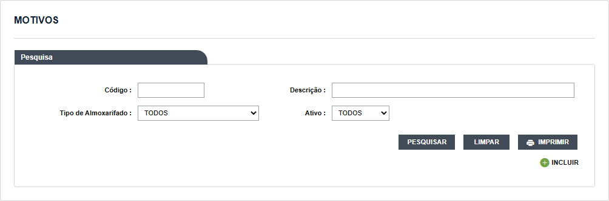
A imagem mostra o título MOTIVOS, os quatro filtros e os botões PESQUISAR, LIMPAR, IMPRIMIR e INCLUIR, sem nenhuma linha de resultado.
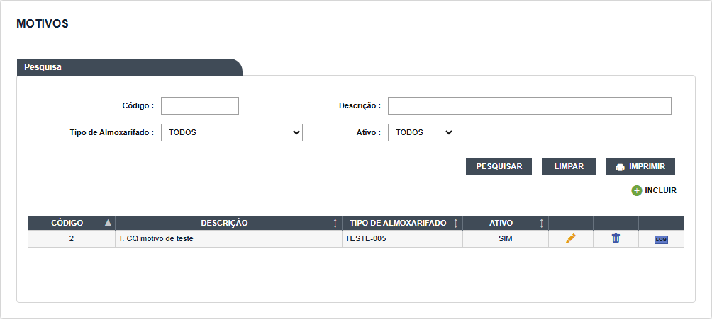
A imagem mostra a lista completa depois de PESQUISAR, com as colunas CÓDIGO, DESCRIÇÃO, TIPO DE ALMOXARIFADO e ATIVO e os ícones de cada linha.
- Incluir. Clique em INCLUIR. Abre o formulário "Dados" com Código (bloqueado, mostra 0), Data do Cadastro (bloqueada), Descrição*, Tipo de Almoxarifado* e Ativo (Sim marcado por padrão), com os botões VOLTAR e SALVAR.
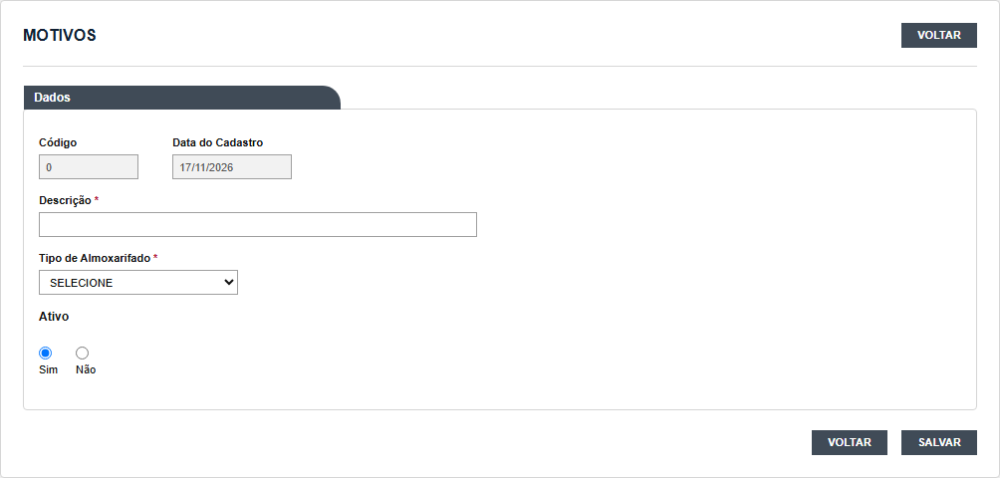
A imagem mostra o formulário "Dados" inteiro e em branco: Código 0, Data do Cadastro (17/11/2026), Descrição*, Tipo de Almoxarifado* ("SELECIONE") e Ativo com Sim marcado, com VOLTAR no alto e VOLTAR e SALVAR embaixo.
- Salvar vazio (para conhecer a mensagem). Clique em SALVAR sem preencher. Aparece uma faixa rosa no alto do quadro com "A descrição é obrigatória! (máximo de 50 caracteres)" (texto inteiro, visto no print) e, sob cada campo, "A descrição é obrigatória (máximo de 50 caracteres)." e "O tipo de almoxarifado é obrigatório.". A faixa do alto trata só a descrição; a falta do tipo aparece apenas sob o campo. Como o campo Descrição para de aceitar texto no 50º caractere, a mensagem de "máximo de 50 caracteres" só aparece quando o campo está vazio.
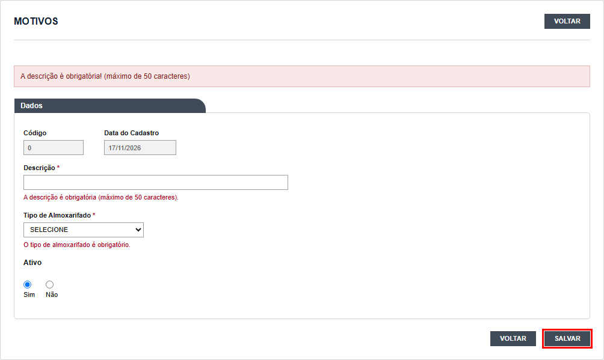
A imagem mostra a faixa rosa inteira no alto, "A descrição é obrigatória! (máximo de 50 caracteres)", e as duas mensagens em vermelho sob os campos: "A descrição é obrigatória (máximo de 50 caracteres)." e "O tipo de almoxarifado é obrigatório.". O botão SALVAR aparece destacado.
- Preencher. Digite a Descrição e escolha o Tipo de Almoxarifado. Deixe Ativo = Sim se o motivo deve poder ser escolhido.
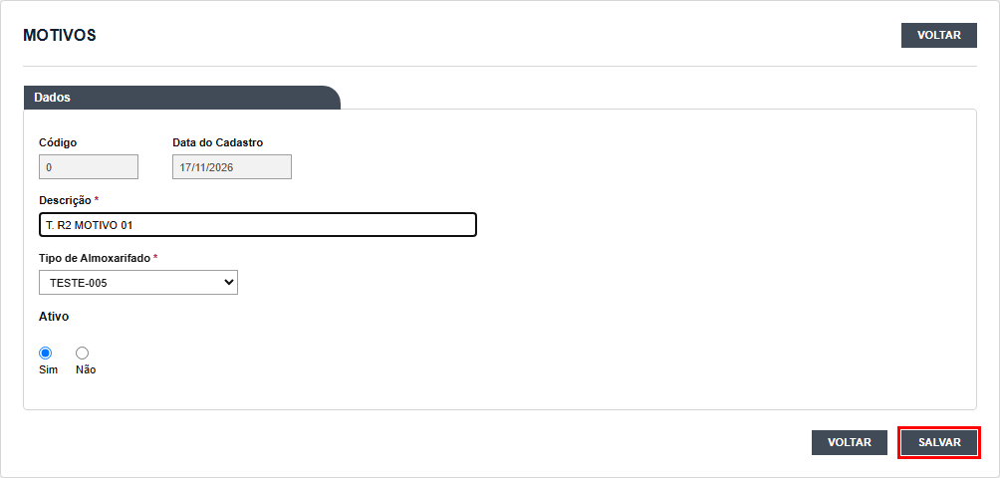
A imagem mostra a descrição "T. R2 MOTIVO 01", o tipo TESTE-005 e Ativo = Sim.
- Salvar e confirmar. Clique em SALVAR. O sistema pergunta "Confirma a inclusão do item?". Clique em SIM (ou NÃO para voltar ao formulário: o formulário continua aberto e preenchido).

A imagem mostra o pop-up "Confirma a inclusão do item?" com SIM e NÃO sobre o formulário preenchido.
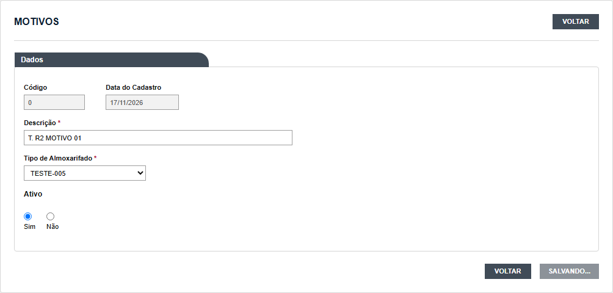
A imagem mostra a tela logo depois do SIM: a pesquisa, sem nenhuma mensagem de sucesso (o botão chegou a mostrar "SALVANDO..."; ver DV-CQ-N-008).
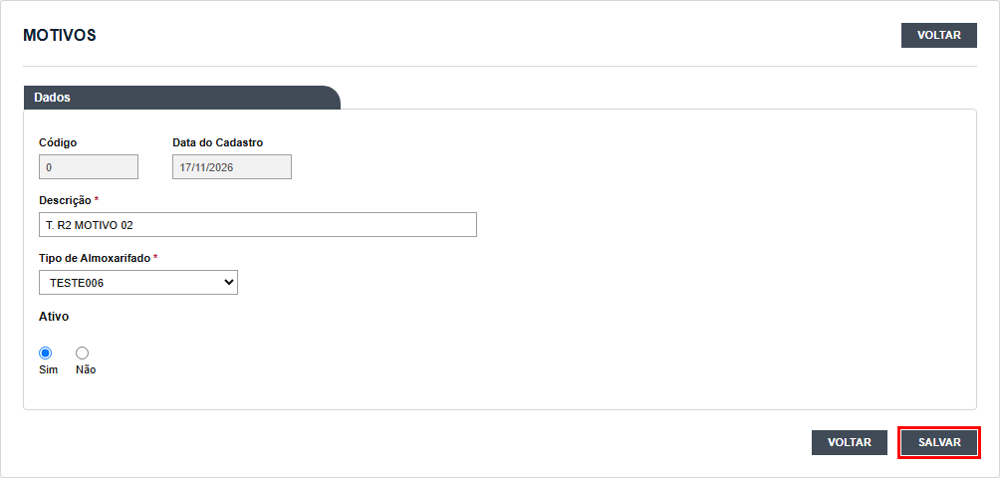
A imagem mostra o formulário ainda aberto e preenchido depois de clicar em NÃO na pergunta.
- Conferir na lista. Pesquise de novo (por exemplo, Descrição "T. CQ motivo"). O motivo aparece com CÓDIGO, DESCRIÇÃO, TIPO DE ALMOXARIFADO, ATIVO e os ícones de Editar (lápis), Excluir (lixeira) e Log (selo azul com o texto LOG). Os títulos das colunas têm setas de ordenação. O filtro Código devolve só o motivo pedido, e uma pesquisa sem resultado mostra "A pesquisa não retornou nenhum resultado.".
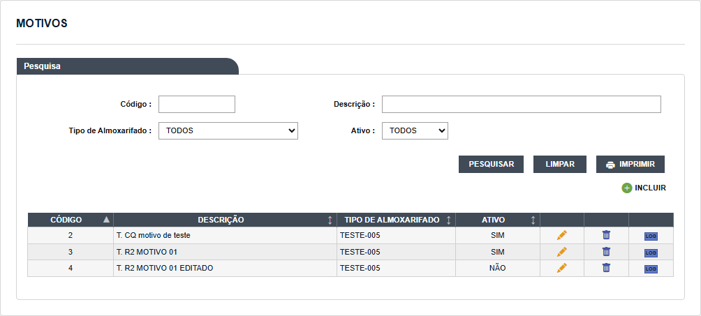
A imagem mostra a lista com o motivo de código 4 já alterado e com ATIVO = NÃO, com os três ícones (lápis, lixeira e o selo azul LOG).
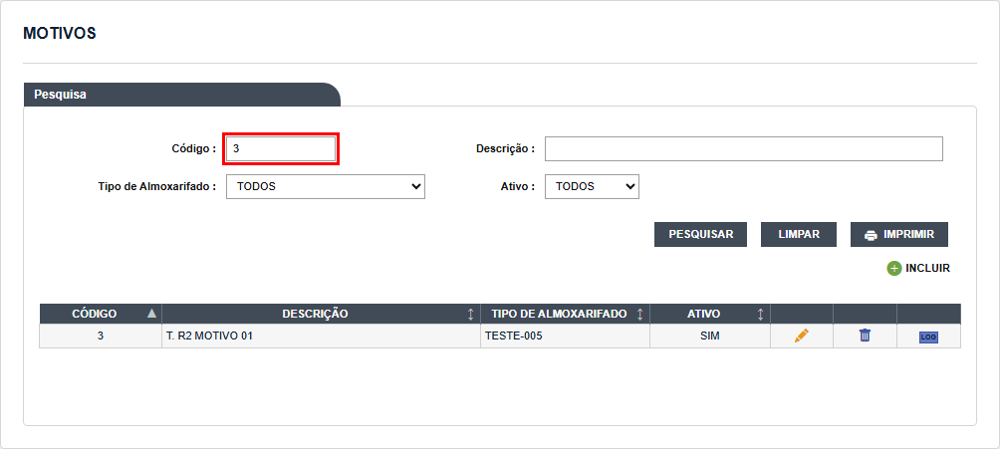
A imagem mostra o filtro Código = 3 devolvendo só o motivo de código 3.
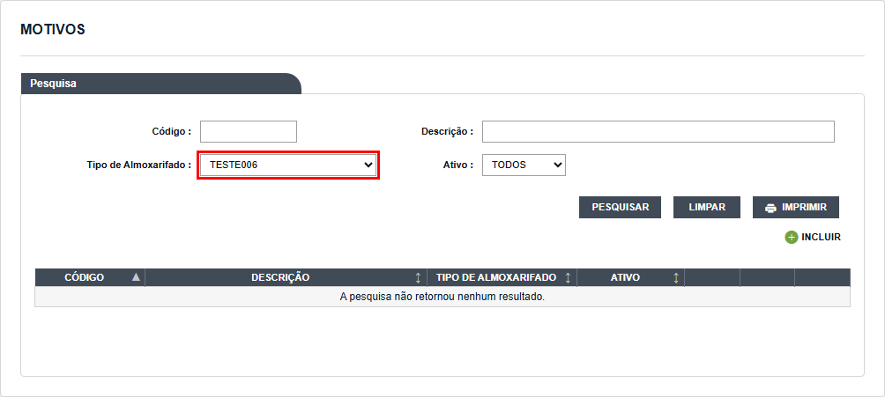
A imagem mostra a mensagem "A pesquisa não retornou nenhum resultado." (filtro pelo tipo TESTE006).
Descrição repetida: duas inclusões seguidas, com a mesma descrição e o mesmo tipo, foram aceitas (códigos 3 e 4; a API respondeu 201 nas duas). Ver DV-CQ-N-004.
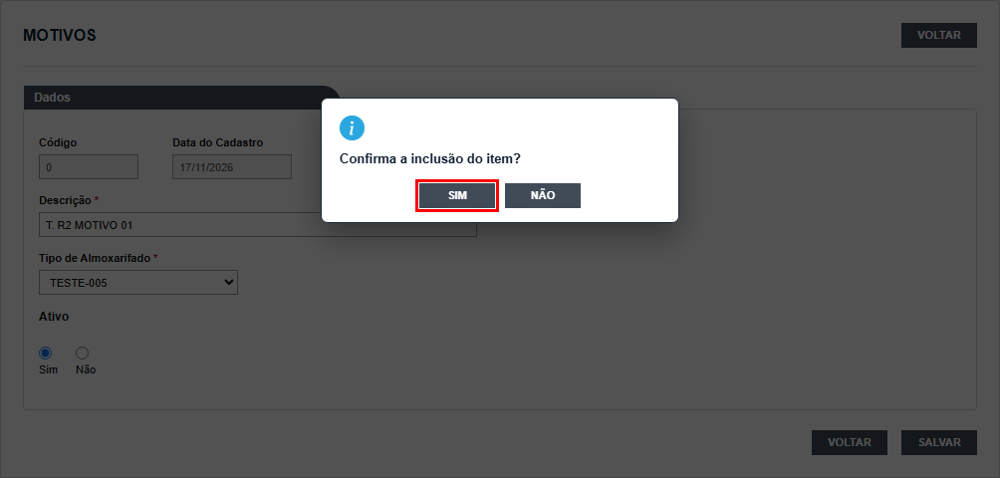
A imagem mostra a pergunta "Confirma a inclusão do item?" na segunda inclusão, com a mesma descrição e o mesmo tipo da primeira.
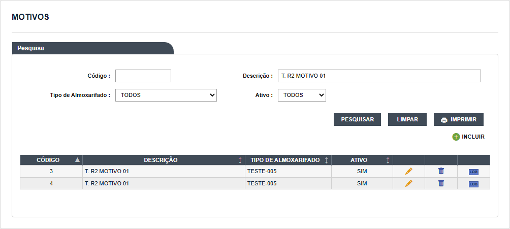
A imagem mostra a lista com os motivos de código 3 e 4, de mesma descrição "T. R2 MOTIVO 01" e mesmo tipo TESTE-005, ambos ativos.
- Alterar ou inativar. Na lista, clique no lápis. O formulário abre com os dados gravados e o Código preenchido. Mude o que precisa (para inativar, marque Não) e clique em SALVAR. O sistema pergunta "Confirma a alteração do item?". Não existe campo de justificativa nesta tela.
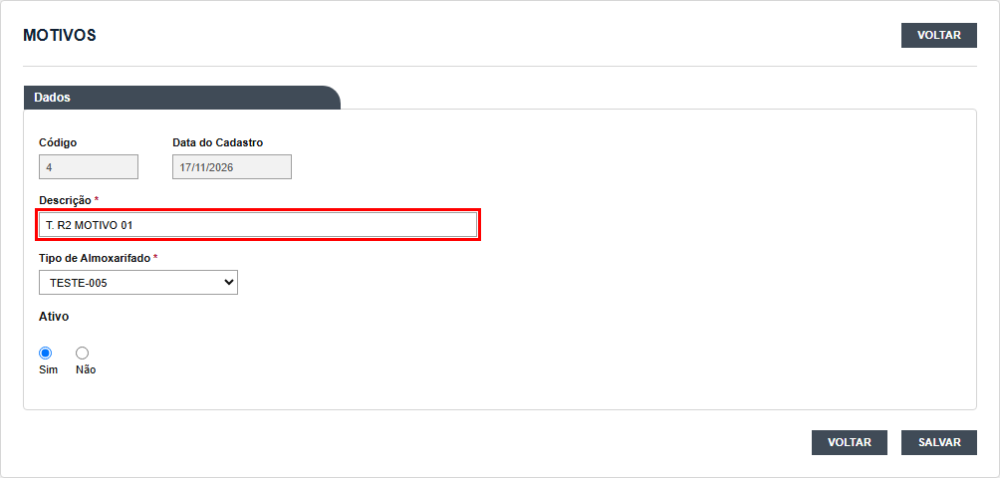
A imagem mostra o motivo de código 4 aberto para edição, com o Código preenchido e bloqueado e sem campo de justificativa.
A imagem mostra o pop-up "Confirma a alteração do item?" com a descrição já mudada e Ativo = Não. Depois do SIM a tela volta à pesquisa sem mensagem de sucesso.
- Ver o histórico. Na lista, clique no selo azul LOG (o texto de ajuda do botão é "Log de alterações"; não é um relógio). A janela "LOG DE ALTERAÇÕES" mostra, para cada evento, o tipo (Inclusão, Alteração), data, hora e Usuário (aparece só o número, ver DV-CQ-N-006), a linha "Justificativa:" e a tabela CAMPO / VALOR ANTERIOR / VALOR NOVO.
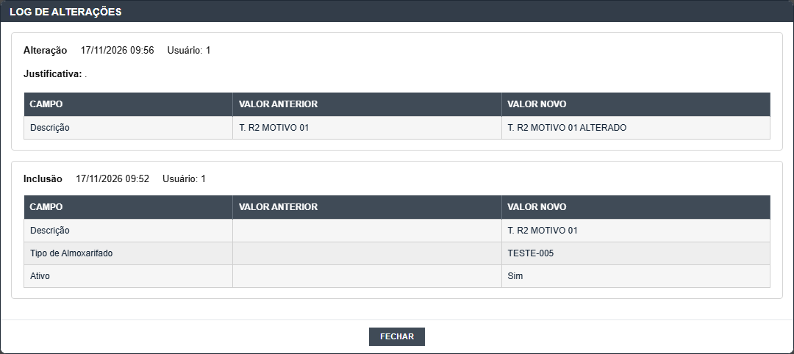
A imagem mostra duas entradas: a Alteração (Descrição de "T. R2 MOTIVO 01" para "T. R2 MOTIVO 01 ALTERADO", com "Justificativa: ." vazia e "Usuário: 1") e a Inclusão (Descrição, Tipo de Almoxarifado TESTE-005 e Ativo Sim).
- Excluir. Na lista, clique na lixeira. A pergunta é só "Confirma a exclusão do item?", sem pedir justificativa. Com SIM, o motivo some da lista e aparece uma faixa verde no alto da tela de pesquisa: "Exclusão efetuada com sucesso."
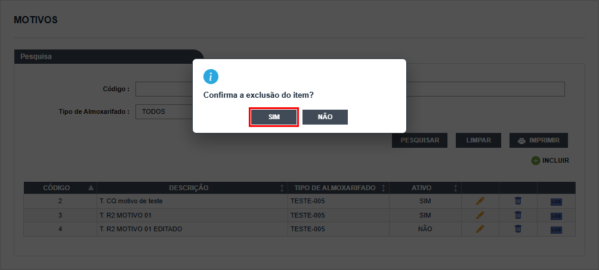
A imagem mostra o pop-up "Confirma a exclusão do item?" (sem campo de justificativa) sobre a lista de motivos.
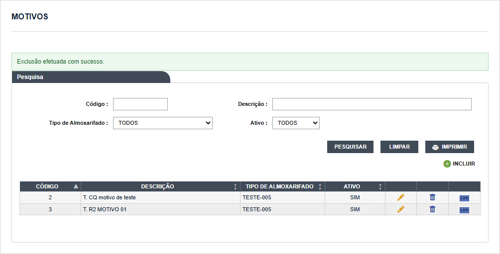
A imagem mostra a tela de pesquisa com a faixa verde "Exclusão efetuada com sucesso." e a lista sem o motivo excluído.
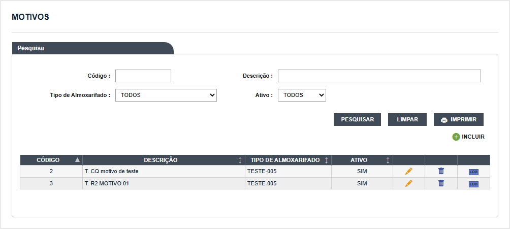
A imagem mostra a lista sem o motivo de código 4, que foi excluído.
- Imprimir. O botão IMPRIMIR existe ao lado de LIMPAR. Ao clicar, abre uma nova aba e o servidor responde com sucesso em
motivos/relatorio(página 1, 15 itens, ordenados por código). Conteúdo do PDF não conferido (o navegador do robô não exibe o PDF); no legado gera um PDF com os filtros da tela.